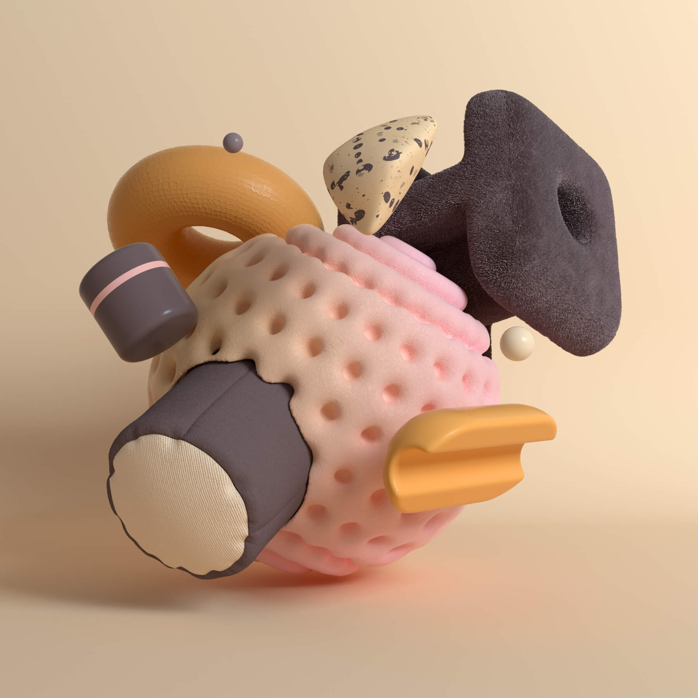
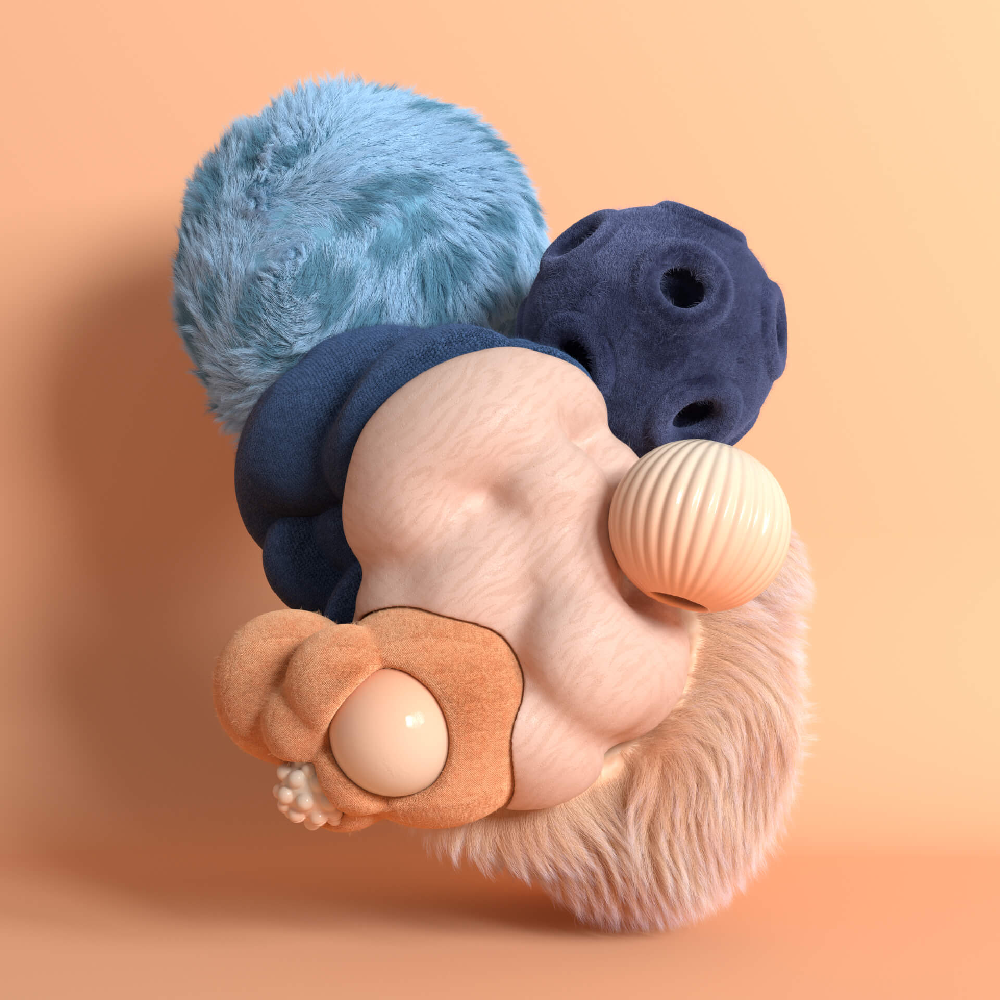
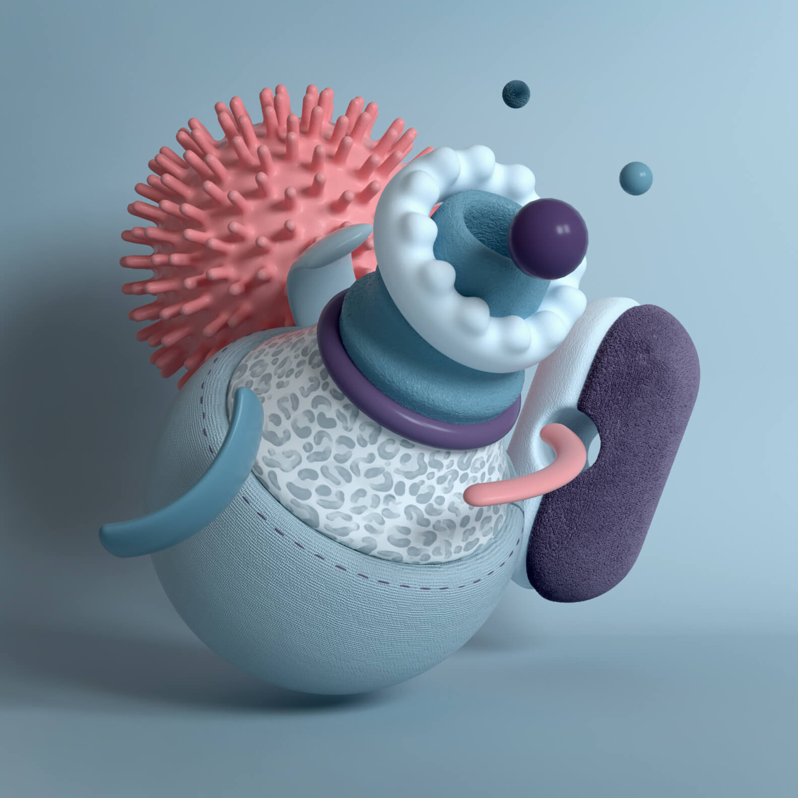

PostgreSQL 16 Haute Disponibilité pour le Cadastre National
Mission réalisée en novembre 2024 pour la Direction Générale des Impôts du Burkina Faso (DGI BF). Déploiement d'une infrastructure PostgreSQL 16 haute disponibilité pour supporter la plateforme SYC@D (Système de gestion du Cadastre).
Architecture Patroni HA
Cluster HA composé de : 2 nœuds Patroni (réplication streaming), 3 nœuds ETCD (consensus distribué), HAProxy (load balancing) et KeepAlive (VIP flottante) — tout sur Ubuntu 22.04. Architecture garantissant un basculement automatique en cas de défaillance du primaire.
Déploiement SYC@D
Déploiement de la plateforme SYC@D (if.bf) sur les serveurs DGI BF, reconfiguration du reverse proxy NGINX et intégration avec GeoServer pour la gestion des données spatiales cadastrales.
Client
DGI — Direction Générale des Impôts, Burkina Faso
Type
PostgreSQL DBA · Infrastructure HA
Date
Novembre 2024
Technologies
PostgreSQL 16 · Patroni · ETCD · HAProxy · KeepAlive · NGINX · GeoServer
Environnement
Ubuntu 22.04 · 5 nœuds (2 Patroni + 3 ETCD)


